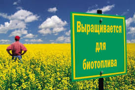

Біоенергетика та Біопаливо
Біомаса є одним з найдавніших джерел енергії, однак її використання до недавнього часу зводилося до прямого спалювання при відкритому вогні або в печах і топках з відносно низьким к.к.д. Під біомасою розуміються органічні речовини, які утворюються в рослинах в результаті фотосинтезу і можуть бути використані для отримання енергії, включаючи всі види рослинності, рослинні відходи сільського господарства, деревообробної та інших видів промисловості, побутові відходи.
Біомаса грає суттєву роль в енергобалансах промислово розвинених країн: у США її частка складає 4 %, в Данії — 6 %, в Канаді — 7 %, в Австрії — 14 %, в Швеції — 16 % загального споживання первинних енергоресурсів цих країн. У світі в 2004 р. встановлена потужність електростанцій на біомасі склала 39 млн кВт.
Найпоширенішими технологіями використання біомаси в біоенергетиці є:
- фізичний метод — пряме спалювання;
- хімічні методи — піроліз, газифікація, виробництво спиртів і масел для отримання моторного палива;
- мікробіологічний метод — анаеробна ферментація з утворенням метану.
Значним ресурсом для відновлюваної енергетики є використання хімічної енергії біомас. Перевагою біомас є те, що їх можна безпосередньо перетворювати в паливо для автомобілів та інших машин. Біомаса може безпосередньо вирощуватися для потреб виробництва енергії, тоді її називають біомасою третього покоління, або можуть використовуватися відходи біологічної маси, призначеної для інших потреб, тоді її називають біомасою другого покоління.
Біопаливо, яке може використовуватися в транспортних засобах, виготовляють з олії, тваринних жирів, жирних відходів. За 2017 рік воно забезпечило 5,7 % споживання палива транспортом
Енергетичними рослинами вважаються:
- сорти дерев, що швидко ростуть і спеціальні однорічні рослини з високим вмістом сухої маси для використання як твердого палива;
- цукро-та крохмалевмісні польові культури для переробки в етанол, а так само маслянисті культури для виробництва біодизеля для застосування як рідкого палива;
- польові культури, придатні для силирування і використання у виробництві біогазу.
До органічних відходів відносяться відходи, що виникають в сільському, лісовому, домашньому господарстві і промисловості: відходи деревообробки, солома, трава, листя, гній, шлам, органічні відходи домашнього господарства тощо.